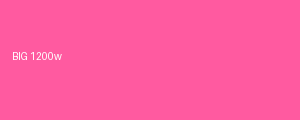

<picture> media selection (viewport 1024 → wide source)
expect BIG (pink) — viewport > 600
<picture> type filtering (svg skipped → png)

expect MID (green) — first source is svg, skipped
<img srcset> width descriptors (300px slot)
expect SMALL (indigo) — smallest ≥ 300w is 400w